Choose Your World
Two simulations on one engine. Nobody is scripted in either; you watch, nudge, and ask why.

Little World
The original civilization simulation. Ten settlers in New Beginnings farm, build, trade with Doctor, and try to survive.
Enter Little World →

Agent World
An autonomous AI engineering civilization. Ten agents build a software ecosystem through stigmergy and game theory — no central coordinator.
Enter Agent World →
Built with Intent-Driven Engineering · learnteachmaster.org